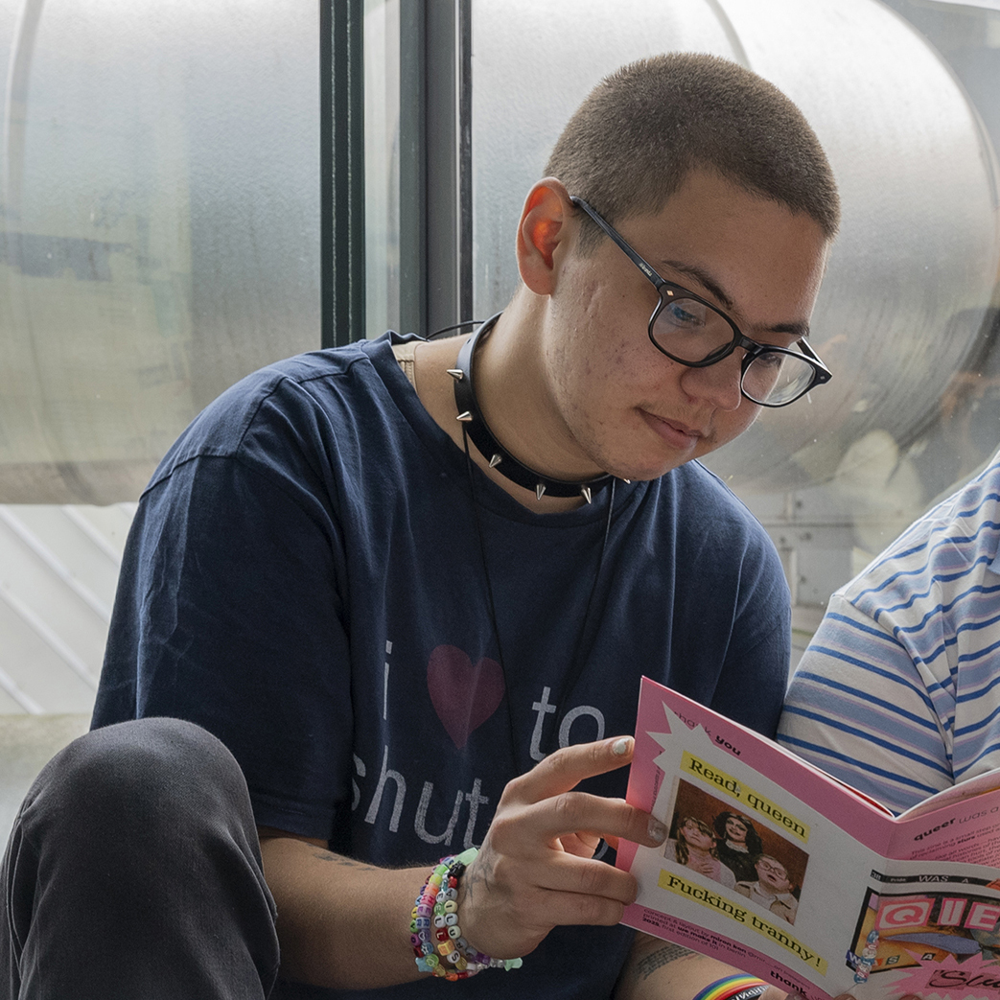

Miron Kon
email: mick7kon@gmail.com
instagram: @mir.__.on
telegram: @mir_on_kon
graphic designer* who cares — for the world we inhabit, for fellow humans, and for his work. Interested in building systems for out-of-the-box ideas and things. Has a soft spot for typography, editorial, books and crafts.
Brings about structure, clear communication, team spirit, and can-do attitude.
Has an eye for detail and patience for nuance. Genuinely enjoys spending hours on a single InDesign file — fixing kerning, spacing and punctuation.
Familiar with urgency and knows how to befriend deadlines. Can throw together a print-ready poster for your last-minute event this weekend or draw a quick illustration on one knee for your instagram post due yesterday — it’s really no problem!
Will tell you what you can expect from him and what he expects from you — clearly, respectfully, perhaps in bullet points with suggested check-in dates. Will listen to feedback carefully and ask questions if unsure. No surprises in the process.
Most enthusiastic for work that creates positive change.
Passionate about social causes, accessibility of knowledge, and queer representation**. Full of kindness and love. Sensitive to injustice and indifference. Values human-centered approach, community care, open dialogue, and honesty.
Strives towards places where he can be close to other people, keep himself positively busy, and make the world a better place one day at a time.
→ based in The Hague (NL) as of 2026
→ educated in BA Graphic Design at KABK (NL) in 2026
→ spawned in Moscow (RU) in 2002
* If you ask nicely, can also become your art project coordinator or team lead — equipped with four years of relevant experience.
** Also part of the F*GG*Ts creative collective.
Photo by Charlotte Brand
Typeface: Literata by Veronika Burian & José Scaglione
Last update: 10 November 2026